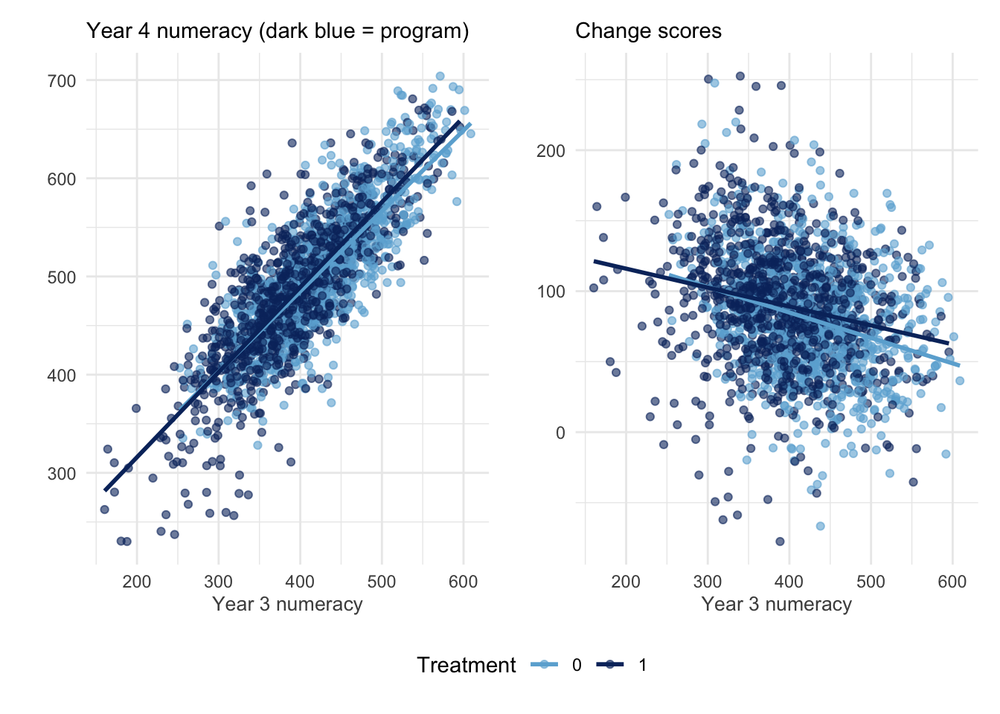
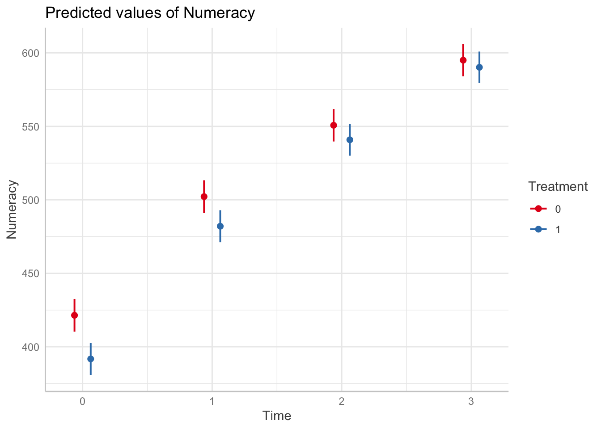
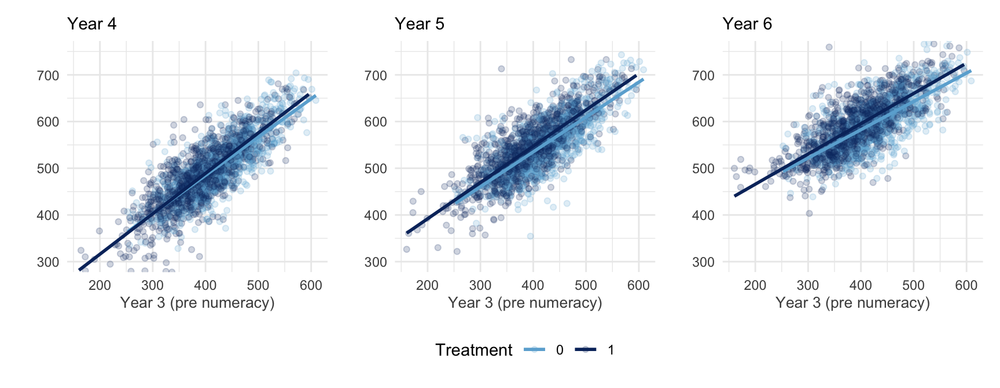

RCT in schools
I recently applied for a senior statistical consultant position. The interview process included a practical component which I fumbled in the endzone. But it got me interested in causal inference with nonrandomized data.
Causal inference, aka estimating the average treatment effect (ATE, or \(\tau\)), usually requires random allocation to a treatment and a control group but not always. The critical reference here is Rubin, 1974, which is such a fundamental reference in this field that the practical component I fumbled was essentially a test of whether I had read Rubin and the modern representations of it (e.g., Twisk et al 2018; Clifton & Clifton 2019; O’Connell et al 2017).
Rubin 1974
Randomization guarantees that any pre-existing differences between groups are non-systematic, so the estimand \(\tau\) will be unbiased - but potentially not very precise. Note that unbiased does not require random sampling from a broader population or any other assumption here (although generalizability might). And it only guarantees unbiased in the long run, as a hidden confound could (randomly) occur in any particular random draw.
While randomization guarantees that pre-existing differences are not systematic, it is not the only way to deal with pre-existing differences. We can also match groups on the important causal variables to remove (or reduce) pre-existing differences. This is different from randomization which can leave pre-existing differences between groups, because it removes/reduces the differences and so will also produce more precise causal estimates. In practice we rarely have a “complete & true” causal model to guarantee we have removed the pre-existing differences, and so is the reason we rely on randomization as it does not depend upon our prior knowledge.
We can match groups by selecting matched pairs, or we can also add the pre-existing variable as a covariate to our model (e.g., ANCOVA). The ANCOVA determines the effect of each variable holding the other covariates at the same value (e.g., 0). When these other covariates represent pre-existing differences it is similar (but not equivalent?) to matching.
In nonrandomized designs we do not always want to match pre-existing differences (!!). In Lord’s Paradox, a dietician wanted to know how the school cafeteria diet affected weight gain among boys and girls. Pre and post weights were measured at the beginning and end of term respectively. There were pre-existing differences since boys were generally heavier than girls at the beginning of term, and there were also post differences as these pre differences tended to carry over (plus any differential diet effects). Adding the initial pre weights as a covariate (i.e., ANCOVA on post weights) will determine whether the post weights differed between boys and girls with identical frequency distributions of initial weight. However when equating boys and girls by the same pre weight, one is selecting relatively light boys and relatively heavy girls. Under regression-to-the-mean, those light boys will end up gaining more weight and the heavy girls will end up gaining less weight, even without any impact of dining hall diet. Thus when groups are equated, one group appears to be affected by diet more than the other, using either post weights or weight gain (post - pre). The important point to draw is that equating for pre-existing differences is not always pertinent to the research question and can also produce biased estimates (by introducing RTM effects).
Pearl (2016) provides a succinct explanation for the different estimates produced by covariate adjustment of pre scores, according to the difference between direct and total effects. In a causal model of Lords Paradox, initial weight is a mediating variable of the effect of sex on final weight (i.e., Sex -> Initial Weight -> Final Weight). Thus including initial weight as a covariate estimates the direct effect of sex on final weight (or weight gain). Conversely, omitting initial weight then estimates the total effect of sex on final weight. The appropriate estimate (and therefore estimand) depends on the research question at hand.
In general, the \(\tau\) in an RCT can be estimated from post or gain scores, as pre-existing differences are random (as are RTM effects) and therefore the estimate is unbiased, however including pre scores as a covariate in an ANCOVA is always more efficient (Rubin, 1974). On the other hand, when assignment is not random and experimental groups are defined by a variable that is relevant to the change in measurement, then gain scores without covariate adjustment for pre score differences usually produce a more relevant estimand.
Below we explore these issues in the context of an educational program evaluation.
Practical exam
You have been asked to evaluate a numeracy program that is provided to Year 3 students in NSW government schools. You are required to:
- interpret the results from an analysis on the short-term impact of the program; and
- evaluate the long-term impact of the program.
About the program
The program was designed to improve numeracy proficiency and is a whole-of-school intervention. All Year 3 students in participating schools participate in the program at the beginning of the school year in 2018.
Task 1 Interpretation of results from an analysis
You undertake a statistical analysis of the impact of the program using a Hierarchical Linear Modelling (HLM) technique. The model has a two-level structure with students (level-1) nested within schools (level-2). Table 1 (on page 2) shows the output from the HLM analysis, using the student data from 2018 to 2019.
The dependent variable in the model was Year 4 Numeracy results. The model included the following school-level variables:
- a treatment indicator (a binary variable taking the value 1 when a school was using the program and 0 otherwise);
- a SES variable (a continuous measure of school socio-economic status; higher value indicates higher socio-economic status); and
- a relative school growth variable (a school growth score for each school was first calculated as the mean Year 4 scores minus the mean Year 3 scores). The relative school growth variable was then calculated as the deviation from the grand mean of the school growth scores).
The model also included the following student-level variables:
- Year 3 Numeracy scores (a continuous measure of numeracy performance in Year 3 PRIOR to the intervention);
- First Nations status (a binary variable taking the value 1 for First-Nations students and 0 otherwise);
- Gender (a binary variable taking the value 1 when a student was female and 0 otherwise);
- Language background (a binary variable taking the value 1 when a student had a language background other than English and 0 otherwise).
Table 1: Results of HLM analysis, with Year 4 Numeracy score as dependent variable
| Model | Coefficient (B) | Std Error | Beta | t | p-value |
|---|---|---|---|---|---|
| Constant | 92.011 | 28.832 | 1.000 | 3.191 | 0.001 |
| Relative school growth | 0.884 | 0.069 | 0.246 | 12.757 | 0.000 |
| Year 3 Numeracy | 0.741 | 0.020 | 0.711 | 36.756 | 0.000 |
| SES | 0.065 | 0.022 | 0.066 | 3.003 | 0.003 |
| Gender | 5.216 | 2.703 | 0.035 | 1.930 | 0.054 |
| First Nations status | -17.001 | 6.108 | -0.053 | -2.783 | 0.005 |
| Language Background | 0.107 | 1.649 | 0.001 | 0.065 | 0.948 |
| Treatment | 4.126 | 3.070 | 0.256 | 1.344 | 0.179 |
What are the assumptions of the model described above?
# From Dorothy Bishop https://doi.org/10.1177/25152459241267904
Analyses of intervention effects conducted in schools can be affected by clustering if randomization is conducted at the level of the schools or classrooms because children within a school/classroom are likely to be more similar to each otherthan to children from different schools/classrooms. Standard errors and p-values from a typical regression model depend on the assumption tha tthe residuals in the model across cases are independent from each other. If children within classrooms are more similar to each other, the assumption of independence of residuals is violated, and this will usually reduce the precision of confidence intervals (and hence reduce the statistical significance of effects).
The key statistic for any analysis that seeks to control for the effects of clusters is the intracluster correlation coefficient (ICC). The ICC is the proportion of total variance in a dependent variable explained by the cluster variable. So an ICC of 0.15 means the 15% of the variance in scores can be explained by the cluster variable. Typically ICCs greater than 0.10 are considered likely to have significant effects on standard errors.
If so then we could include school as a fixed effect with an HC1 or HC2 adjustment.The model above represents an ANCOVA analysis of treatment differences at the post test, where the Year 3 numeracy scores are included as a pre score covariate in the model (ANCOVA-post). The \(\beta\) estimate for Treatment determines whether students with the same initial Year 3 numeracy score are expected to have the same final Year 4 numeracy score (irrespective of treatment). However this requires that any pre-existing differences between program schools relative to schools not in the program are due to random variation and not some systematic variation (random allocation will remove any systematic pre-existing differences and so the only differences remaining will be random). Unfortunately we are not told whether schools were randomly allocated to treatment groups, and so we cannot infer this assumption is met.
When random allocation is not present, then intepreting the \(\beta\) for Treatment is not straightfoward due to potential RTM effects (see below).
Nb. The Relative school growth score represents the relative change for each school, and so adjusts for differences in growth between each school - that is the clustered changes (among students) due to school rather than treatment. However it seems likely to covary with any school-level treatment effect, which is likely to confound \(\tau\) (when included in my experiments in the analyses below I cannot replicate the results provided).
What diagnostics could you use to check the fit of the model and whether the assumptions of the model are valid?
The most important assumption of the model above is that pre-existing differences between groups are random (i.e., random allocation to treatment). There is no way to test this assumption; testing for significant differences in Year 3 numeracy between the treatment groups can tell us if pre-existing differances are present but will not help us determine whether those differences are due to a systematic effect or random variation (sometimes random allocation results in significant differences between groups).
Let’s take a look at the data
| School_ID | Student_ID | Year_level | Numeracy | Gender | First_Nations | Language_background | SES | Treatment |
|---|---|---|---|---|---|---|---|---|
| 1100067 | 1 | 3 | 464.3 | 0 | 0 | 0 | 1159 | 0 |
| 1100067 | 1 | 4 | 542.7 | 0 | 0 | 0 | 1159 | 0 |
| 1100067 | 1 | 5 | 531.1 | 0 | 0 | 0 | 1159 | 0 |
| 1100067 | 1 | 6 | 554.9 | 0 | 0 | 0 | 1159 | 0 |
| 1100044 | 2 | 3 | 258.1 | 1 | 0 | 1 | 1064 | 1 |
| 1100044 | 2 | 4 | 387.2 | 1 | 0 | 1 | 1064 | 1 |
| 1100044 | 2 | 5 | 428.1 | 1 | 0 | 1 | 1064 | 1 |
| 1100044 | 2 | 6 | 542.3 | 1 | 0 | 1 | 1064 | 1 |
| 1100044 | 3 | 3 | 352.5 | 0 | 0 | 1 | 1064 | 1 |
| 1100044 | 3 | 4 | 456.7 | 0 | 0 | 1 | 1064 | 1 |
| 1100044 | 3 | 5 | 533.6 | 0 | 0 | 1 | 1064 | 1 |
| 1100044 | 3 | 6 | 617.3 | 0 | 0 | 1 | 1064 | 1 |
| 1100045 | 4 | 3 | 449.1 | 1 | 0 | 0 | 1124 | 0 |
| 1100045 | 4 | 4 | 509.7 | 1 | 0 | 0 | 1124 | 0 |
| 1100045 | 4 | 5 | 605.8 | 1 | 0 | 0 | 1124 | 0 |
| 1100045 | 4 | 6 | 654.8 | 1 | 0 | 0 | 1124 | 0 |
| 1100100 | 5 | 3 | 349.2 | 0 | 0 | 0 | 1163 | 0 |
| 1100100 | 5 | 4 | 402.9 | 0 | 0 | 0 | 1163 | 0 |
| 1100100 | 5 | 5 | 450.3 | 0 | 0 | 0 | 1163 | 0 |
| 1100100 | 5 | 6 | 520.0 | 0 | 0 | 0 | 1163 | 0 |
The records are arranged in long format with rows arranged by school, student and year; and each row representing a student-year observation.
For Task 1, we will select the data from Years 3 and 4, and rearrange
it into wide format with Pre and Post
scores.
| School_ID | Student_ID | Gender | First_Nations | Language_background | SES | Treatment | Pre | Post | cPre | Change |
|---|---|---|---|---|---|---|---|---|---|---|
| 1100021 | 41 | 1 | 0 | 0 | 1180 | 1 | 358.9 | 507.9 | -48.194 | 148.98 |
| 1100021 | 59 | 0 | 0 | 0 | 1180 | 1 | 467.0 | 571.2 | 59.926 | 104.18 |
| 1100021 | 61 | 0 | 0 | 0 | 1180 | 1 | 493.2 | 529.4 | 86.146 | 36.22 |
| 1100021 | 62 | 0 | 0 | 1 | 1180 | 1 | 361.1 | 421.1 | -45.974 | 59.96 |
| 1100021 | 67 | 0 | 0 | 1 | 1180 | 1 | 413.1 | 523.9 | 5.986 | 110.89 |
| 1100021 | 68 | 0 | 0 | 0 | 1180 | 1 | 378.6 | 435.1 | -28.514 | 56.54 |
| 1100021 | 69 | 1 | 0 | 0 | 1180 | 1 | 405.7 | 420.7 | -1.334 | 14.94 |
| 1100021 | 70 | 0 | 0 | 0 | 1180 | 1 | 359.0 | 416.7 | -48.074 | 57.72 |
| 1100021 | 74 | 0 | 0 | 0 | 1180 | 1 | 429.1 | 502.5 | 22.066 | 73.36 |
| 1100021 | 76 | 0 | 0 | 0 | 1180 | 1 | 563.5 | 599.3 | 156.426 | 35.76 |
| 1100021 | 77 | 0 | 0 | 0 | 1180 | 1 | 375.6 | 475.1 | -31.494 | 99.48 |
| 1100021 | 78 | 1 | 0 | 1 | 1180 | 1 | 522.4 | 616.5 | 115.366 | 94.05 |
| 1100021 | 81 | 0 | 0 | 1 | 1180 | 1 | 450.0 | 556.9 | 42.966 | 106.84 |
| 1100021 | 82 | 0 | 0 | 0 | 1180 | 1 | 481.0 | 540.9 | 73.906 | 59.94 |
| 1100021 | 85 | 1 | 0 | 0 | 1180 | 1 | 479.7 | 586.0 | 72.666 | 106.24 |
| 1100021 | 88 | 1 | 0 | 0 | 1180 | 1 | 462.5 | 473.0 | 55.466 | 10.48 |
| 1100021 | 91 | 1 | 0 | 0 | 1180 | 1 | 421.6 | 501.4 | 14.526 | 79.75 |
| 1100021 | 92 | 0 | 0 | 0 | 1180 | 1 | 469.8 | 599.0 | 62.766 | 129.16 |
| 1100021 | 94 | 1 | 0 | 0 | 1180 | 1 | 505.5 | 602.6 | 98.406 | 97.10 |
| 1100021 | 96 | 0 | 0 | 0 | 1180 | 1 | 459.7 | 582.8 | 52.626 | 123.09 |
Note that pre-existing numeracy differences between treatment groups are present:
df %>%
filter(Year_level == 3) %>%
lm(Numeracy ~ 1 + Treatment,
data = .) %>%
tidy()## # A tibble: 2 × 5
## term estimate std.error statistic p.value
## <chr> <dbl> <dbl> <dbl> <dbl>
## 1 (Intercept) 423. 2.20 192. 0
## 2 Treatment1 -31.2 3.11 -10.0 4.73e-23The intercept is the mean numeracy level among the non-program schools in Year 3, while the parameter for the treatment effect represents a pre-existing deficit in numeracy scores among the program schools.
Also note the demographic representation of minorities, lower SES regions and males is higher in the program schools, consistent with enrolment of schools with poor educational resources into the program
df %>%
filter(Year_level == 3) %>%
group_by(Treatment) %>%
summarise(
Numeracy = mean(Numeracy),
First_Nations = mean(First_Nations),
Language = mean(Language_background),
SES = mean(SES),
Females = mean(Gender))## # A tibble: 2 × 6
## Treatment Numeracy First_Nations Language SES Females
## <fct> <dbl> <dbl> <dbl> <dbl> <dbl>
## 1 0 423. 0.0291 0.181 1042. 0.488
## 2 1 392. 0.0993 0.322 1038. 0.516Other assumptions of HLMs are straightforward to check as a measure of model fit. For instance the residual distributions in the model should be normally distributed around zero, which can be checked by visual inspection.
# check whether residuals are normally distributed around 0
plot(fit) The specification of the random effect distribution should also be assessed in a HLM. Variance among different levels of the random effects should be similar. An ANOVA can be used to test for an overall difference in the squared residuals (\(r_{ij}^2\)) between levels. Or residuals can be plotted stratified by grouping level, inspecting for similar spread between levels and no correlations or patterns over levels.
# check there is no heteroscedasticity among different levels of the random effects
plot(fit, as.factor(school) ~ resid(., scaled=TRUE),
abline=0, pch=16,
xlab="Standardised residuals",
ylab="School")What are some limitations and/or caveats of the analysis? How could the model be improved to overcome some of these limitations?
The coefficient for Treatment represents the average treatment effect (\(\tau\)) on post (Year 4) scores, but if and only if the assignment to treatment was random (i.e., RCT). However randomization is often considered impractical when evaluating school programs in disadvantaged communities. Instead comparisons are often made with schools not in the program, and who are also not (as) disadvantaged/deprived. Consequently the post scores will tend to regress towards their respective population means and spuriously cause the program to appear ineffective or even harmful. An ANCOVA assessing post score differences without randomization will be misleading, even after adjusting for pre-existing differences, due to the potential presence of such regression-to-the-mean effects.
In such cases it is still possible to determine whether program schools gain more numeracy on average than schools not in the program by the estimand of a change/gain score analysis. It is important to note that a change/gain score analysis answers a distinctly different question from the post score ANCOVA, namely whether program schools gain the same amount of numeracy on average as the other schools (by contrast the ANCOVA assesses the difference in post means after equating for pre differences). According to Wright (2003), the only procedure that is always correct in this situation is a scatterplot comparing the scores at time 2 with those at time 1 for the different groups.
p1 <- pdf %>%
ggplot(aes(x = Pre, y = Post, color = Treatment)) +
geom_point(alpha = 0.6) +
geom_smooth(method = "lm", formula = y ~ x, se=F) +
scale_color_manual(values = c(blues9[5], blues9[9])) +# c("#377EB8", "#E41A1C")
labs(subtitle = "Year 4 numeracy (dark blue = program)",
y = "", x = "Year 3 numeracy")
p2 <- pdf %>%
ggplot(aes(x = Pre, y = Change, color = Treatment)) +
geom_point(alpha = 0.6) +
geom_smooth(method = "lm", formula = y ~ x, se=F) +
scale_color_manual(values = c(blues9[5], blues9[9])) +# c("#377EB8", "#E41A1C")
labs(subtitle = "Change scores",
y = "", x = "Year 3 numeracy")
p1 + p2 + plot_layout(guides = 'collect') &
theme_minimal() +
theme(legend.position = "bottom",
axis.title.x = element_text(size = 10, color = "grey30"))
The distinct slopes for each treatment group are shown in dark blue (program) and light blue (non-program). The vertical distance between these slopes in each panel indicate the treatment effect. Where the slopes are not parallel indicates the program may have a heterogenous treatment effect across Year 3 numeracy levels. In addition, the negative slope in the right panel shows scores from all schools tend to regress to the mean - high Year 3 scores produce smaller gains (change scores) than low Year 3 scores. So the difference in slope in the right panel shows the program improves high scoring students more than low scoring students, thus reducing regression-to-the-mean effects in these schools relative to other schools.
Below we compare the estimates from a post score ANCOVA and a change score analysis.
An ANCOVA on the post scores produces an estimate which is similar to that provided in the question material above
fit.1 <- lmer(Post ~ 1 + Treatment + cPre + (1|School_ID),
data = as.data.frame(pdf))
tidy(fit.1, effects = "fixed") %>%
filter(term == "Treatment1") # 3.29 (4.88) vs 4.126 (3.070)## # A tibble: 1 × 7
## effect term estimate std.error statistic df p.value
## <chr> <chr> <dbl> <dbl> <dbl> <dbl> <dbl>
## 1 fixed Treatment1 3.29 4.88 0.675 47.4 0.503The estimated effect of the program on Year 4 numeracy scores from the ANCOVA equating Year 3 numeracy level was 3.29 (±4.88) points (compare to Table 1 above).
However without randomization, equating for Year 3 numeracy is likely to make the program look ineffective due to regression-to-the-mean in each respective group. Instead if we estimate the relative gain of program schools over other schools then we may still determine whether any benefit accrued to the program schools after treatment.
# Adding covariates wiil improve the precision but not change the estimand
pdf %>%
lmer(
Post ~ 1 + Treatment + cPre + First_Nations + SES + Gender + Language_background +
(1|School_ID),
data = .) %>%
tidy(effects = "fixed") %>%
filter(term == "Treatment1") # 4.07 (4.47) vs 4.126 (3.070)The simplest change score analysis is done with a t-test/OLS. The unadjusted estimate is the difference between the mean differences, and shows a much more profound improvement among program schools. This produces an unbiased estimate however it does not account for the expected dependency between students from the same school, and so does not control the type-I error rate at the nominal level (i.e., the p-value is too low)
pdf %>%
mutate(Treatment = fct_rev(Treatment)) %>% # recode so gain is over non-program schools
t.test(Change ~ Treatment, data = .) %>%
tidy() %>%
select(`0` = estimate2, `1` = estimate1, estimate:conf.high) # 9.50118, p = .000000862## # A tibble: 1 × 8
## `0` `1` estimate statistic p.value parameter conf.low conf.high
## <dbl> <dbl> <dbl> <dbl> <dbl> <dbl> <dbl> <dbl>
## 1 80.8 90.3 9.50 4.94 0.000000862 1920. 5.73 13.3The estimate 9.501 from the t-test is an unbiased estimate, however the error term does not respect the dependency within schools in the data.
To account for the dependency between students from the same school, an error term for each school can be added (i.e., random intercept) in an RM ANOVA. However the estimate will be biased using an RM ANOVA in this unbalanced dataset
aov(Change ~ 1 + Treatment + Error(School_ID), # add cPre to reduce bias?
data = pdf) -> aov.change.school
aov.change.school %>%
emmeans::emmeans("Treatment") %>%
as.data.frame() %>%
select(Treatment, emmean) %>%
spread(Treatment, emmean) %>%
mutate(estimate = `1` - `0`) # 10.52004, p = .00000119## Note: re-fitting model with sum-to-zero contrasts## 0 1 estimate
## 1 80.77 90.28 9.501To account for the dependency in an unbalanced dataset and so produce an unbiased estimate, we need a linear mixed model with a random intercept for each school
fit.2 <- lmer(Change ~ 1 + Treatment + (1|School_ID),
data = as.data.frame(pdf))
fit.2 %>%
tidy(effects = "fixed") %>%
filter(term == "Treatment1") # 9.88 (3.82), p = .0128## # A tibble: 1 × 7
## effect term estimate std.error statistic df p.value
## <chr> <chr> <dbl> <dbl> <dbl> <dbl> <dbl>
## 1 fixed Treatment1 9.88 3.82 2.59 48.1 0.0128The estimate from the LMM of 9.88 (3.82) is similar (but not equivalent) to the t-test result. Nevertheless, the degrees of freedom (and therefore the error) now better reflects the dependency among students from the same school.
When considering this result, the question arises whether we should adjust for pre-existing differences in Year 3 numeracy (and/or other pre-existing differences in demographics). As far as I can tell, in the context of a pseudoexperimental design such as this, the experts consensus appears to be that covariates for pre-existing differences should not be included in a change score analysis, as these real differences are likely to mask the total effects of the program (Twisk et al, 2018; Dallal 2020). According to Pearl (2016), the decision rests on where the Year 3 numeracy levels stand with respect to the program allocation in a causal DAG. If the schools were allocated to the program because of their low numeracy levels then equating for numeracy levels and including them as a covariate is warranted as we might be interested in the direct effect of the program. However if low numeracy levels are merely a mediator of the program effect on numeracy then we should not adjust and so estimate the total effect of the program. We aren’t told in this example how allocation to the program was performed, so the only reasonable justification I can provide is that we should be interested in how much the program improved numeracy among the disadvantaged schools, rather than whether the program will improve numeracy among all schools on average.
# The effect of equating Year 3 numeracy scores on predicted gain
p1 <- ggpredict(fit.2, terms = "Treatment") %>% plot() +
coord_cartesian(ylim = c(75, 95)) +
labs(subtitle = "without equating Year 3 numeracy")
# Nb. Adding cPre turns this model into the post scores ANCOVA
fit.2b <- lmer(Change ~ 1 + Treatment + cPre + (1|School_ID),
data = as.data.frame(pdf)) # 3.29 (4.88)
p2 <- ggpredict(fit.2b, terms = "Treatment") %>% plot() +
coord_cartesian(ylim = c(75, 95)) +
labs(subtitle = "after equating Year 3 numeracy")
p1 + p2We can also estimate gain in a mixed 2 x (2) ANOVA with treatment and
time (Pre, Post) as factors, where the interaction term
(Time:Treatment) represents the average gain of the program
schools over the other schools.
In a RM ANOVA, Time is nested within School
and this must be entered into the error term. Note the result matches
the RM ANOVA on the change scores (which was biased because of
unbalanced cells and is biased here too)
lpdf <- df %>%
filter(Year_level %in% 3:4) %>%
left_join(
filter(df, Year_level == 3) %>%
select(School_ID, Student_ID, Pre = Numeracy) %>%
mutate(cPre = c(scale(Pre, scale=F))),
by = join_by(School_ID, Student_ID)
) %>%
mutate(Time = Year_level - 3)
aov.interact.school <- aov(Numeracy ~ Treatment*Time + Error(School_ID/Time),
data = lpdf)
emmeans::emmeans(aov.interact.school, ~ Time|Treatment) %>%
as.data.frame() %>%
select(Time, Treatment, emmean) %>%
spread(Time, emmean) %>%
mutate(delta = `1` - `0`) %>%
select(Treatment, delta) %>%
spread(Treatment, delta) %>%
mutate(estimate = `1` - `0`) # 10.52004, p = .0335## Note: re-fitting model with sum-to-zero contrasts## Warning in (mth$objs[[1]])(object, trms, xlev, grid, ...): Some predictors are correlated with
## the intercept - results may be very biased## 0 1 estimate
## 1 80.76 90.26 9.501# Nb. If we don't add Time as a nested variable here, we get the same result as
# the t-test on the change scores above (est. = 9.501182) Testing the same model in a linear mixed model setting, where the
interaction term (Time:Treatment) represents the gain of
program schools over other schools
fit.3 <- df %>%
filter(Year_level %in% 3:4) %>%
mutate(Time = Year_level - 3) %>%
as.data.frame() %>%
lmer(Numeracy ~ 1 + Time*Treatment + (1|School_ID/Time),
data = .)
fit.3 %>%
tidy(effects = "fixed") %>%
filter(term == "Time:Treatment") # 9.51 (4.01), p = .0213## # A tibble: 0 × 7
## # ℹ 7 variables: effect <chr>, term <chr>, estimate <dbl>, std.error <dbl>, statistic <dbl>,
## # df <dbl>, p.value <dbl># Nb. Adding Pre as a covariate on the RHS is invalid since Pre is already
# included on the LHS in the first level of Time
fit.3b <- df %>%
filter(Year_level %in% 3:4) %>%
mutate(Time = Year_level - 3) %>%
left_join(
filter(df, Year_level == 3) %>%
select(School_ID, Student_ID, Pre = Numeracy) %>%
mutate(cPre = c(scale(Pre, scale=F))),
by = join_by(School_ID, Student_ID)
) %>%
as.data.frame() %>%
lmer(Numeracy ~ 1 + Time*Treatment + cPre + (1|School_ID/Time),
data = .) # 9.89 (3.82), p = .0127
p1 <- ggpredict(fit.3, terms = c("Time", "Treatment")) %>% plot() +
coord_cartesian(ylim = c(380, 520)) +
labs(subtitle = "without equating Year 3 numeracy")
p2 <- ggpredict(fit.3b, terms = c("Time", "Treatment")) %>% plot() +
coord_cartesian(ylim = c(380, 520)) +
labs(subtitle = "after equating Year 3 numeracy")
p1 + p2 + plot_layout(guides = 'collect') &
theme(legend.position = "bottom")The LMM with nested groups for school and time produces the best unbiased estimate of 9.51 (±4.01) with the correct error-term.
I’m not sure why this produces a different estimate from the LMM on change scores above (to be considered later?), but this estimate is closer to the t-test estimate and so I’m guessing this model produces the most unbiased estimate with the correct error rate.
We can also relax the parallel slopes assumption (aka sphericity/compound symmetry), but unless there is a good reason to believe different schools will show different gains over time then this might not be justified…
fit.4 <- df %>%
filter(Year_level %in% 3:4) %>%
mutate(Time = Year_level - 3) %>%
as.data.frame() %>%
lmer(Numeracy ~ 1 + Time*Treatment + (1 + Time|School_ID/Time),
data = .) ## boundary (singular) fit: see help('isSingular')fit.4 %>%
tidy(effects = "fixed") %>%
filter(term == "Time:Treatment") # 9.98 (4.48), p = .0277## # A tibble: 0 × 7
## # ℹ 7 variables: effect <chr>, term <chr>, estimate <dbl>, std.error <dbl>, statistic <dbl>,
## # df <dbl>, p.value <dbl>This gives us a similar estimate (with less precision) to the LMM with change scores above.
To answer the question, the post scores ANCOVA relies on random allocation to the program in order to provide an unbiased average treatment effect (\(\tau\)). Without random allocation, we cannot assume the pre-existing differences are random and not real. In the presence of real pre-existing differences, we can still determine whether the program improved numeracy among the disadvantaged schools by defining a model of gain. In this unbalanced dataset, the best (unbiased) model is a LMM with nested effects of school and time.
Wihtout random allocation to groups, any estimated differences may be due to pre-existing differences between the program schools and the other schools rather than the program, or even due to an interaction between the program and the schools (i.e., if the program only works in the kind of schools in the program); and so the estimand does not represent the average treatment effect (\(\tau\)). Nevertheless, an estimate of the difference in slope may be an informative of the success of the program (i.e., in those schools), especially when we have no reason to expect program schools to gain on other schools without treatment.
What can you conclude from this model about the short-term impact of the program on student numeracy proficiency after one year?
If allocation to the program was not random AND schools were placed in the program because they had lower numeracy levels, then the post score ANCOVA treatment estimate above may include RTM effects and produce a biased estimate. Accordingly, low scoring program schools are equated with high scoring non-program schools, so the best performing program schools are likely to improve least in numeracy while the worst performing non-program schools are likely to improve the most. This would result in underestimating the effect of the program, and making interpretation of the non-signifcant positive effect (\(\beta = 4.126\), \(p > .05\)) difficult.
If allocation to the program was random, then the average treatment effect of the program on Year 4 numeracy is small (4.126) but everything from moderate positive effects (10.1432) to small negative effects (-1.8192) are consistent with the data, including a zero effect (\(p > .05\)).
Regarding other practical considerations: We don’t know if the effect of treatment is interacting with any of the other predictor variables (e.g., Year 3 numeracy, relative school growth or SES). Adding interaction terms would help determine the presence of varying effects of treatment and so better understand the conditions under which the treatment works, which may help when planning wider implementation or policy.
Task 2 Investigation of long-term impact of treatment
You are going to undertake a statistical analysis to evaluate the long-term impact of the program. To do this, the numeracy performance of the student sample from Task 1 was tracked to Year 6. The annual numeracy results from Year 3 to Year 6 for both treatment and control groups are given in the data file “Year 3-6 numeracy.csv”. The data is in long format meaning that a student has multiple rows of records.
Same demographic variables as in Task 1 (except relative school growth) are recorded in the data file. Student IDs, School IDs and the numeracy scores from Year 3 to Year 6 are also included. The “Year_level” variable indicates which Year level the record comes from.
Estimate the long-term effect of treatment
The suggested solution to a similar design, albiet in the context of an RCT, is offered by Bell & Rabe, 2020. Based on simulations of cluster randomized trial data where the outcome was continuous and measured at baseline and three post-intervention time points (as we have here) they suggested the following model:
library(nlme)
library(contrast)
# “treat” and “time” are factors with levels (0,1) and (0,1,2,3) respectively.
Model1 <- lme(y ~ treat*time,
random = ~ 1 | cluster_id,
weights = varIdent(form = ~ 1 | time),
correlation = corSymm(form = ~ 1 | cluster_id/subject_id),
data = dataset, control = lmeControl(maxIter=10000, msMaxIter = 10000))
summary(Model1)
# Note that this contrast does not use the Kenward-Roger correction for degrees
# of freedom which is not implemented in nlme.
contrast(Model1, list(time = '3', treat = '1'), list(time = '3', treat = '0'))This mixed model for repeated measures (MMRM) uses an unstructured time and covariance structure. Unstructured time means that time is modeled categorically, rather than continuously as a linear or polynomial function, and allows for an arbitrary trajectory over time. While the continuous time models may use fewer degrees of freedom and may, therefore, be more powerful, it can be difficult to anticipate the outcome’s time trajectory in advance. Since clinical trials often require a pre-specified analysis plan, unstructured time can be appealing. In the context of randomized controlled trials, fixed effects of time, treatment and their interaction are included in the MMRM model. The interaction term accommodates different patterns of change over time between the arms. Baseline values of the outcome are sometimes included. Maximum-likelihood-based mixed models provide unbiased estimation for data that are MCAR or MAR, as long as the model is not misspecified. All outcome data are used, regardless of whether an individual has complete data or not, making these models consistent with an intention-to-treat analysis.
Cluster randomized trials with longitudinally measured outcomes have two sources of non-independence: the cluster and the repeated measures over time. Linear mixed-effects models are one option for handling the non-independence of measurements over time. In the mixed-model context, one may use a random-coefficients model, using random effects for a subject’s intercept and sometimes slope. Alternatively, one may use covariance pattern models, where the covariance between repeated measures on the same subject is modeled explicitly from the residual effects. Some commonly used covariance structures, available in statistical software, include compound symmetric, autoregressive, or unstructured. A compound symmetric structure assumes that any two measurements on the same individual have the same covariance, regardless of timing. An autoregressive structure assumes that measurements’ correlation drops over time exponentially. Unstructured covariance makes no assumptions about the correlation between measurements, thereby rendering misspecification not a problem; however, it can require that a large number of parameters must be estimated. However, many cluster trials have a fairly small number of assessments on each subject, as we have here.
This model is easily extended to include more than two arms, the baseline value of the outcome variable as a covariate (instead of in the outcome vector as shown here), and/or a baseline by treatment arm interaction.
Our interest was the long-term effect of the program, so under an RCT assumption we could ignore pre-existing differences at baseline (Time 0) and focus on the difference at the fourth time point between the treatment arms, which can be estimated using a contrast within the model.
library(nlme)
library(ggeffects)
fit.9 <- df %>%
mutate(Time = as.factor(Year_level - 3),
Student_ID = as.factor(Student_ID)) %>%
as.data.frame() %>%
lme(Numeracy ~ 1 + Time*Treatment,
random = ~1 | School_ID,
weights = varIdent(form = ~ 1 | Time),
correlation = corSymm(form = ~ 1 | School_ID/Student_ID),
data = ., control = lmeControl(maxIter=10000, msMaxIter = 10000))
summary(fit.9)## Linear mixed-effects model fit by REML
## Data: .
## AIC BIC logLik
## 78891 79023 -39427
##
## Random effects:
## Formula: ~1 | School_ID
## (Intercept) Residual
## StdDev: 25.94 62.67
##
## Correlation Structure: General
## Formula: ~1 | School_ID/Student_ID
## Parameter estimate(s):
## Correlation:
## 1 2 3
## 2 0.771
## 3 0.746 0.805
## 4 0.681 0.726 0.795
## Variance function:
## Structure: Different standard deviations per stratum
## Formula: ~1 | Time
## Parameter estimates:
## 0 1 2 3
## 1.0000 0.9911 0.9408 0.8414
## Fixed effects: Numeracy ~ 1 + Time * Treatment
## Value Std.Error DF t-value p-value
## (Intercept) 421.4 5.672 7661 74.30 0.0000
## Time1 80.8 1.363 7661 59.26 0.0000
## Time2 129.3 1.403 7661 92.18 0.0000
## Time3 173.6 1.514 7661 114.67 0.0000
## Treatment1 -29.7 7.951 47 -3.73 0.0005
## Time1:Treatment1 9.5 1.925 7661 4.94 0.0000
## Time2:Treatment1 19.8 1.981 7661 9.99 0.0000
## Time3:Treatment1 24.8 2.138 7661 11.62 0.0000
## Correlation:
## (Intr) Time1 Time2 Time3 Trtmn1 Tm1:T1 Tm2:T1
## Time1 -0.125
## Time2 -0.153 0.608
## Time3 -0.203 0.531 0.681
## Treatment1 -0.713 0.089 0.109 0.145
## Time1:Treatment1 0.088 -0.708 -0.431 -0.376 -0.126
## Time2:Treatment1 0.108 -0.431 -0.708 -0.482 -0.154 0.608
## Time3:Treatment1 0.144 -0.376 -0.482 -0.708 -0.204 0.531 0.681
##
## Standardized Within-Group Residuals:
## Min Q1 Med Q3 Max
## -3.6256 -0.7022 -0.0450 0.6206 3.4371
##
## Number of Observations: 7716
## Number of Groups: 49ggpredict(fit.9, terms = c("Time", "Treatment")) %>% plot()
hypothesis_test(fit.9, c("Time [3]", "Treatment"))## # Pairwise comparisons
##
## Time | Treatment | Contrast | 95% CI | p
## ---------------------------------------------------
## 3-3 | 0-1 | 4.83 | -10.86, 20.52 | 0.539First plot the scatterplot between every post year and the pre year.
p1 <- df %>%
select(School_ID, Student_ID, Year_level, Numeracy, Treatment) %>%
spread(Year_level, Numeracy) %>%
ggplot(aes(x = `3`, color = Treatment)) +
geom_point(aes(y = `4`), alpha = 0.2) +
geom_smooth(aes(y = `4`), formula = 'y ~ x', method = "lm", se = F) +
labs(subtitle = "Year 4")
p2 <- df %>%
select(School_ID, Student_ID, Year_level, Numeracy, Treatment) %>%
spread(Year_level, Numeracy) %>%
ggplot(aes(x = `3`, color = Treatment)) +
geom_point(aes(y = `5`), alpha = 0.2) +
geom_smooth(aes(y = `5`), formula = 'y ~ x', method = "lm", se = F) +
labs(subtitle = "Year 5")
p3 <- df %>%
select(School_ID, Student_ID, Year_level, Numeracy, Treatment) %>%
spread(Year_level, Numeracy) %>%
ggplot(aes(x = `3`, color = Treatment)) +
geom_point(aes(y = `6`), alpha = 0.2) +
geom_smooth(aes(y = `6`), formula = 'y ~ x', method = "lm", se = F) +
labs(subtitle = "Year 6")
p1 + p2 + p3 + plot_layout(guides = 'collect') &
coord_cartesian(ylim = c(300, 750)) &
scale_color_manual(values = c(blues9[5], blues9[9])) &# c("#377EB8", "#E41A1C")
theme_minimal() &
labs(y = "", x = "Year 3 (pre numeracy)") &
theme(legend.position = "bottom",
axis.title.x = element_text(size = 10, color = "grey30"))
The distinct slopes for each treatment group are shown in dark blue (treatment) and light blue (control). The vertical distance between these slopes in each panel indicate the treatment effect for each year. Where the slopes are not parallel indicates the treatment may have a heterogenous effect across Year 3 numeracy levels.
Assuming a linear effect of time, we can test a similar interaction model as suggested in Task 1, which will determine the (average) gain per year among program schools relative to other schools, over Years 3 to 6.
fit.5 <- lmer(Numeracy ~ Treatment*Year_level + (1|School_ID/Year_level),
data = df)
tidy(fit.5, effects = "fixed") %>%
filter(term == "Treatment1:Year_level") # 8.38 (1.85)## # A tibble: 1 × 7
## effect term estimate std.error statistic df p.value
## <chr> <chr> <dbl> <dbl> <dbl> <dbl> <dbl>
## 1 fixed Treatment1:Year_level 8.38 1.85 4.53 146. 0.0000121# adding covariates does not change this estimate
lmer(Numeracy ~ Treatment*Year_level + SES + Gender + First_Nations +
Language_background + (1|School_ID/Year_level),
data = df) %>%
tidy(effects = "fixed") %>%
filter(term == "Treatment1:Year_level") # 8.38 (1.85)The interaction between Treatment and
Year_level indicates the long-term impact of the program
over other schools. The average relative gain of program schools from
Year 3 to Year 6 is 8.5 points over other schools.
To determine the long-term effect of the program over any short-term effect, we can omit Year 3 from the interaction and estimate the relative gain from Year 4. Including the Year 3 scores as a (centered) covariate will equate pre-existing differences in this model.
left_join(df,
filter(df, Year_level==3) %>%
select(School_ID, Student_ID, Pre = Numeracy) %>%
mutate(cPre = c(scale(Pre, scale=F))),
by = join_by(School_ID, Student_ID)) %>%
filter(Year_level > 3) %>%
lmer(Numeracy ~ Treatment*Year_level + cPre + (1|School_ID/Year_level),
data = .) -> fit.6
tidy(fit.6, effects = "fixed") %>%
filter(term == "Treatment1:Year_level") # 7.44 (1.72)## # A tibble: 1 × 7
## effect term estimate std.error statistic df p.value
## <chr> <chr> <dbl> <dbl> <dbl> <dbl> <dbl>
## 1 fixed Treatment1:Year_level 7.44 1.72 4.33 102. 0.0000350# adding covariates does not change the estimate
left_join(df,
filter(df, Year_level==3) %>%
select(School_ID, Student_ID, Pre = Numeracy) %>%
mutate(cPre = c(scale(Pre, scale=F))),
by = join_by(School_ID, Student_ID)) %>%
filter(Year_level > 3) %>%
lmer(Numeracy ~ Treatment*Year_level + cPre + SES + Gender + First_Nations +
Language_background + (1|School_ID/Year_level),
data = .) -> fit.7
tidy(fit.7, effects = "fixed") %>%
filter(term == "Treatment1:Year_level") # 7.44 (1.72)## # A tibble: 1 × 7
## effect term estimate std.error statistic df p.value
## <chr> <chr> <dbl> <dbl> <dbl> <dbl> <dbl>
## 1 fixed Treatment1:Year_level 7.44 1.72 4.33 102. 0.0000350After realising the short-term gains, the average long-term gain of program schools in Year 4 to Year 6 was 7.4 points year-to-year over other schools.
The long-term gain could also be represented by the total relative gain between Year 3 to Year 6 for the program schools over the other schools. To estimate this, we include Year_level as a dummy variable rather than as a linear term.
mutate(df, Year_level = factor(Year_level)) %>%
lmer(Numeracy ~ Treatment*Year_level + (1|School_ID/Year_level),
data = .) -> fit.8## boundary (singular) fit: see help('isSingular')tidy(fit.8, effects = "fixed") %>%
filter(str_detect(term, "Treatment1:")) %>%
select(-effect) # 24.8 (3.77)## # A tibble: 3 × 6
## term estimate std.error statistic df p.value
## <chr> <dbl> <dbl> <dbl> <dbl> <dbl>
## 1 Treatment1:Year_level4 9.50 3.77 2.52 7661. 1.18e- 2
## 2 Treatment1:Year_level5 19.8 3.77 5.25 7661. 1.60e- 7
## 3 Treatment1:Year_level6 24.8 3.77 6.58 7661. 4.98e-11Takeaways
In general gain score analyses answer a distinctly different question from ANCOVA, namely “Do subjects in the treatment group gain more than subjects in the control group?”, which is more appropriate when randomization is not present.
Use ANCOVA (with or without change scores) when estimating \(\tau\) with random allocation to treatment groups (RCT).
Without random allocation, use change scores to estimate gain (and ANCOVA may be vulnerable to RTM).
Equating pre-existing differences is not always a good idea and can produce bias in some causal effects (e.g., when the groups are the reason for the pre-existing difference in Y)
When to use change-from-baseline (CFB or gain scores)

Not run
# Adding covariates to equate for pre-existing differences does not change the
# location of the estimate, but does slightly improve the precision
mutate(df, Year_level = factor(Year_level)) %>%
lmer(Numeracy ~ Treatment*Year_level + SES + Gender +
First_Nations + Language_background + (1|School_ID/Year_level),
data = .) -> fit.9
tidy(fit.9, effects = "fixed") %>%
filter(str_detect(term, "Treatment1:")) %>%
select(-effect) # 24.8 (3.72)p1 <- ggpredict(fit.8, terms = c("Year_level", "Treatment")) %>% plot() +
labs(subtitle = "without adjustment")
p2 <- ggpredict(fit.9, terms = c("Year_level", "Treatment")) %>% plot() +
labs(subtitle = "with adjustment")
p1 + p2 + plot_layout(guides = 'collect') &
theme(legend.position = "bottom")# Assuming a smooth effect of time
mutate(df, Treatment = ordered(Treatment)) %>%
gamm(Numeracy ~ Treatment +s(Year_level, k = 4) +
s(Year_level, by = Treatment, k = 4),
correlation = corAR1(form = ~1|School_ID),
data = .) -> fit
ggpredict(fit$gam, terms = c("Year_level", "Treatment")) %>% plot()
plot(fit$gam, scale=0, shade=T, select=2, seWithMean=T)
abline(h=0, lty = 2)